PlanetRoad - Firmowa Strona Internetowa
Nowa strona internetowa firmy PlanetRoad, którą zaprojektowałem w celu uproszczenia klientom poznania firmy, prezentacji dotychczasowych realizacji w czytelny i atrakcyjny sposób oraz ułatwienia kontaktu z firmą
Rola: UX Designer
Zakres odpowiedzialności: Research, Koncept produktu, Projekt interfejsu, Implementacja strony, Testy użyteczności
Czas trwania: 34 tygodnie
Metodyka: Lean UX
 Strona Internetowa
Strona Internetowa
Kontekst
Klient potrzebował przebudowania strony internetowej, tak aby umożliwiała ona prezentacje ukończonych projektów i budowania profesjonalnego wizerunku firmy. Moim głównym celem było stworzenie strony intuicyjnej, spójnej z nową identyfikacją wizualną i łatwej w obsłudze dla użytkowników o zróżnicowanym zaawansowaniu technicznym (trudno jednoznacznie zcharakteryzować w tym aspekcie głównych klientów firmy)
Problem
Użytkownicy nie mieli możliwości poznania oferty i doświadczenia firmy oraz łatwego kontaktu z zespołem PlanetRoad, gdyż dotychczasowa strona nie eksponowała doświadczenia i jakości realizacji, a kontakt z firmą nie był bezpośrednio dostępny na stronie.
Cele
🎯 Ułatwienie klientowi poznania firmy – szybki dostęp do informacji o działalności i doświadczeniu PlanetRoad.
🎯 Prezentacja dotychczasowych realizacji w czytelny i atrakcyjny sposób, podkreślający profesjonalizm firmy.
🎯 Uproszczenie kontaktu z firmą – intuicyjna nawigacja, widoczne formularze i łatwy dostęp do danych kontaktowych.
🎯 Profesjonalna i spójna obecność w sieci – strona wspiera wizerunek firmy zgodny z nową identyfikacją wizualną.
Ograniczenia
⚠️ Strona musi odpowiadać sektorowi B2B – utrzymać profesjonalny i wiarygodny wizerunek firmy.
⚠️ Nowa strona musi być spójna z istniejącą identyfikacją wizualną – kolory, typografia i styl graficzny muszą pasować do nowego brandingu.
⚠️ Brak wcześniejszego doświadczenia firmy w digitalu – strona musi być intuicyjna dla użytkownika, który wcześniej nie korzystał z cyfrowych narzędzi.
⚠️ Konieczność zachowania dostępności informacji podczas wdrożenia – firma musi nadal być w pełni dostępna dla klientów.
Badania
Projekt nowej strony internetowej dla PlanetRoad rozpocząłem od audytu starej strony i poznania szegółowych oczekiwań mojego Klienta.
Rozmowa z CEO zarysowała mi obraz tego, jak miałaby wyglądać strona firmy. PlanetRoad skupia się głównie na współpracy B2B - (np. Developerami) oraz jednostkami samorządowymi. Dlatego priorytetem jest profesjonalizm, oraz budowanie zaufania do marki i zwiększania jej wiarygodności. Sam CEO dał mi również kilka swoich pomysłów odnośnie informacji, które chciałby posiadać na stronie oraz klika użytecznych linków do dolnej nawigacji strony które mogłem później wkomponować w projekt.
Następnie przeprowadziłem analizę konkurencji w branży drogowej, która ujawniła dużą powtarzalność wizualną - wiele firm korzystało z podobnych układów stron i schematycznych kompozycji. W tym przypadku problemem nie było więc wyróżnienie się spośród konkurencji, a zachowanie balansu pomiędzy profesjonalizmem i technicznym charakterem strony, a nieco bardziej nowowczesnych podejściem do projektowania stron internetowych.
Kolejno zbadałem oczekiwania użytkowników i najczęściej wyszukiwane informacje o firmach z branży, aby zapewnić użyteczność nowej strony internetowej pod kątem UX i SEO. Analiza treści pokazała, że kluczowe są: przejrzysta oferta, szybki kontakt oraz portfolio poprzedncih projektów.
Potem przeszedłem do analizy ścieżki użytkownika, która pozwoliła mi lepiej zrozumieć, jakie działania podejmuje potencjalny klient od momentu wejścia na stronę do skontaktowania się z firmą. Zmapowanie tych etapów umożliwiło mi zaplanowanie logicznej i intuicyjnej struktury strony — tak, aby użytkownik mógł łatwo odnaleźć informacje o usługach, przeglądać realizacje i bezproblemowo przejść do sekcji kontaktu.
Równolegle przeprowadziłem analizę SEO w celu poznania najczęściej wyszukiwanych fraz związanych z branżą drogową i projektowaniem infrastruktury. Wyniki pozwoliły mi dobrać odpowiednie słowa kluczowe do treści oraz zaplanować strukturę nagłówków i sekcji. Dzięki temu strona jest nie tylko atrakcyjna wizualnie, ale również lepiej widoczna w wyszukiwarkach internetowych.
Przeprowadziłem także audyt techniczny starej strony, który ujawnił problemy z prędkością ładowania, nieczytelnością na urządzeniach mobilnych oraz brakiem wyraźnych ścieżek konwersji. Te obserwacje stały się podstawą do zaprojektowania nowego układu i optymalizacji strony pod kątem wydajności oraz zgodności z aktualnymi standardami webowymi.
{kind=link}
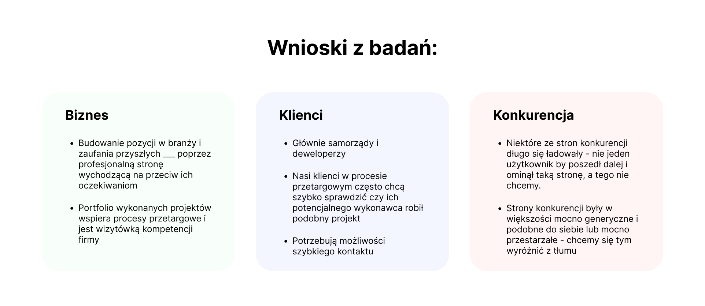
Ideacja
Na etapie ideacji przełożyłem wnioski z badań na konkretne założenia projektowe. Skupiłem się na zaprojektowaniu struktury strony, która w pierwszych sekundach odpowiada na kluczowe pytania użytkownika: czym firma się zajmuje, jakie realizacje ma za sobą i jak szybko można nawiązać kontakt.
Projekt zacząłem od priorytetyzacji - jako główny cel wyznaczyłem ułatwienie klientom zapoznania się z firmą i ukończonymi przez nią projektami. Za nieco mniej ważną przyjąłem estetykę wykonania strony, mimo wszsytko chciałem, aby przyciągała klienta swoim wizualnie przyjemnym dla oka wyglądem. Najniższy priorytet nadałem natomiast utrzymaniu spójności z innymi kanałami komunikacji (działając według wcześniej stworzonej Identyfikacji Wizualnej ten cel niejako sam się wypełnia).
Równolegle pracowałem na niskopoziomowych wireframe’ach, testując różne układy treści i hierarchię informacji, zanim przeszedłem do finalnego interfejsu.
Na etapie projektowania zadbałem o dostępność i czytelność elementów interfejsu, tworząc layouty zgodne z regułami WCAG. Stworzyłem Style Guide obejmujący kolory, typografię i komponenty, zapewniając spójność wizualną strony.
{kind=link}
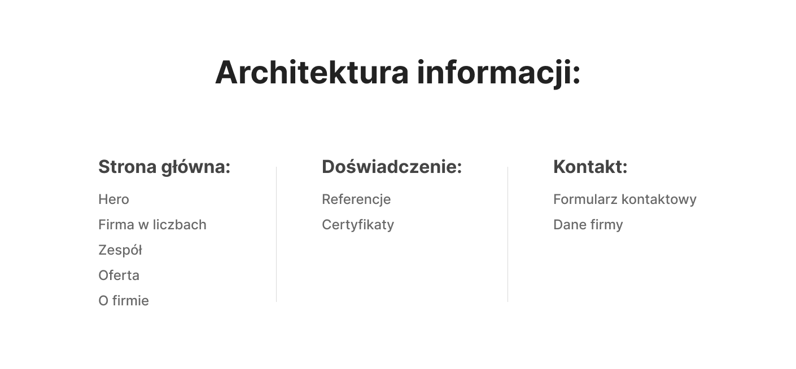
{kind=link}
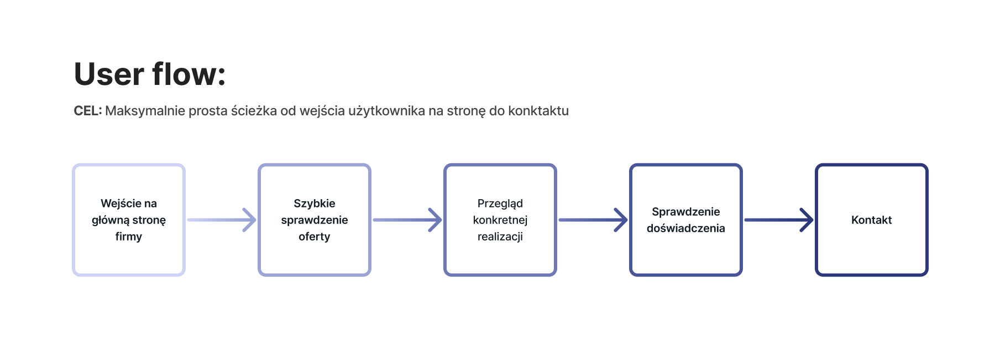
{kind=link}
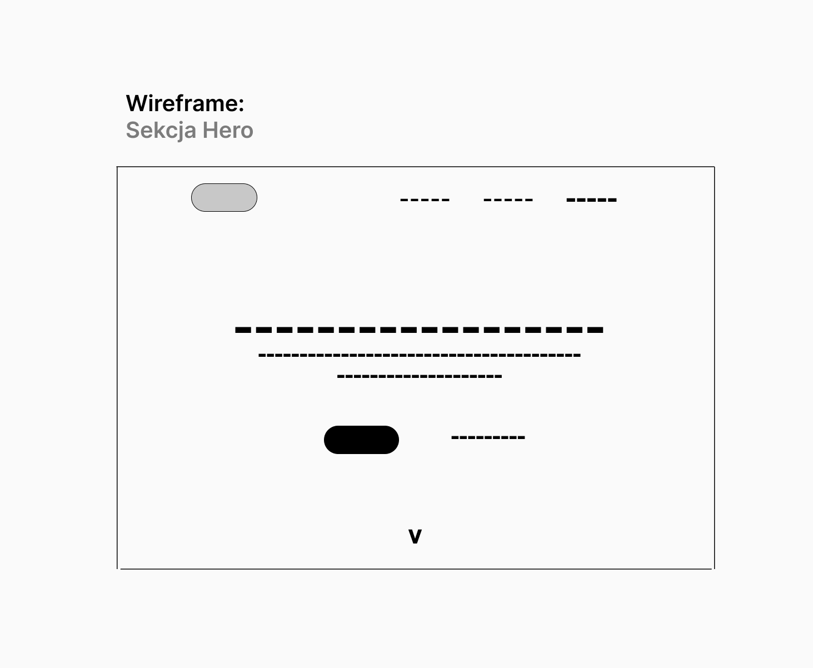
{kind=link}
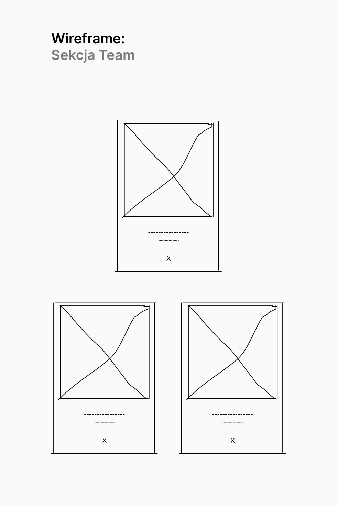
{kind=link}
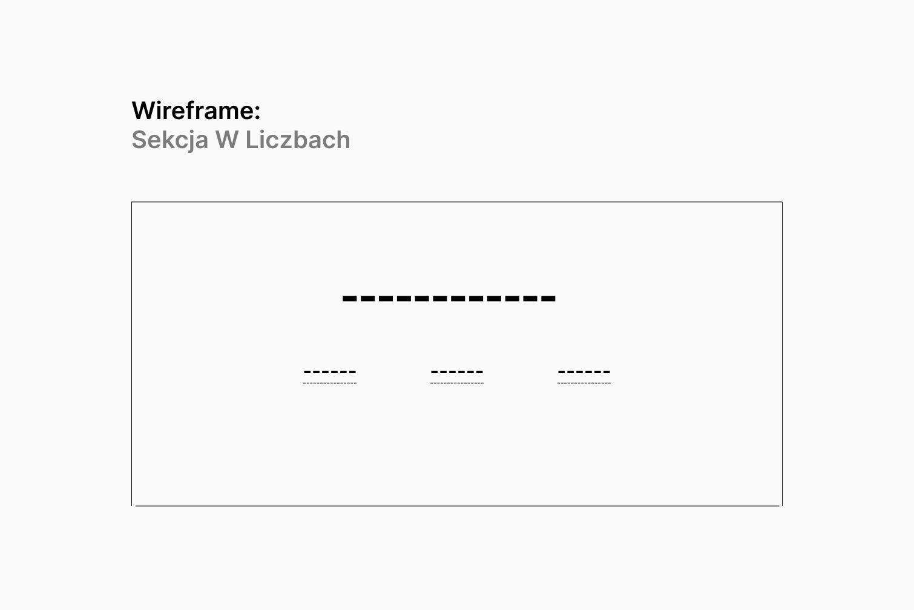
{kind=link}
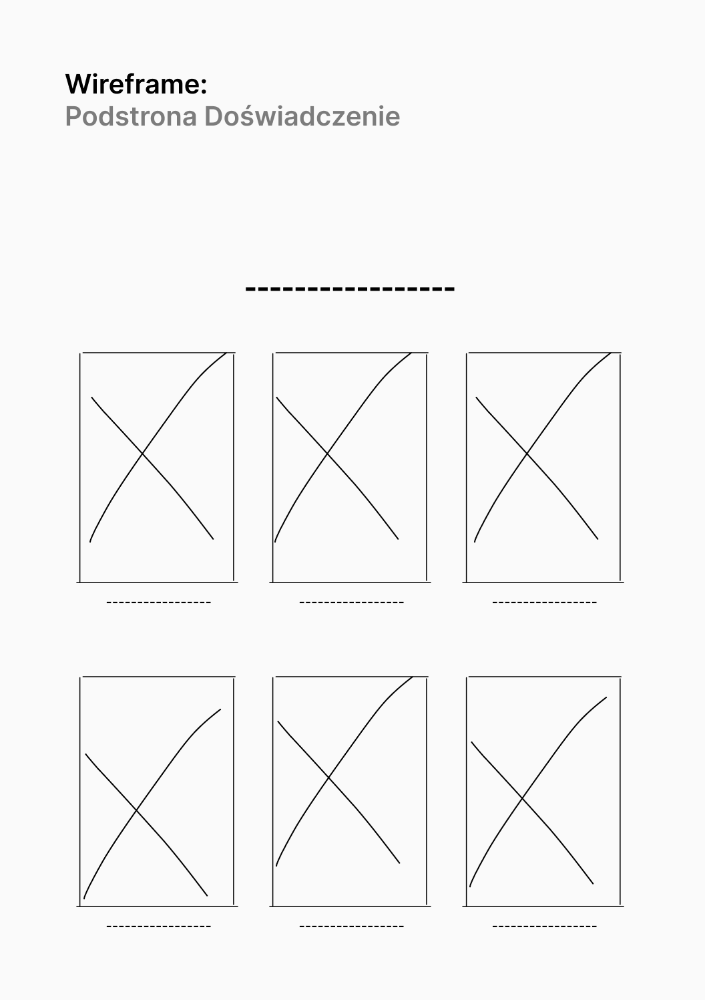
{kind=link}
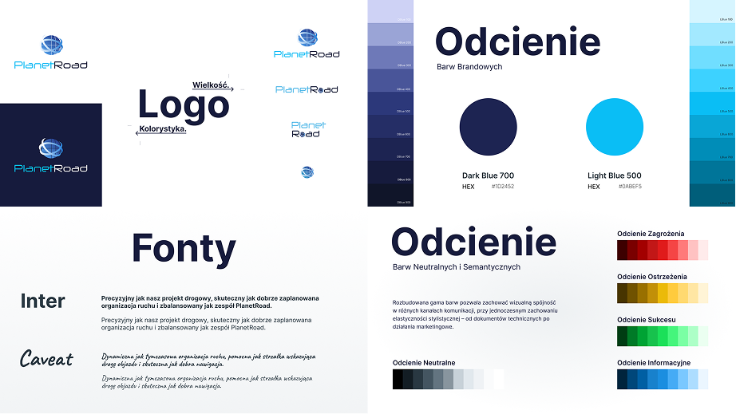
Pełną Identyfikację Wizualną można zobaczyć pod tym linkiem
Iteracje
Tak strona wyglądała przed remake'iem:

{kind=link}
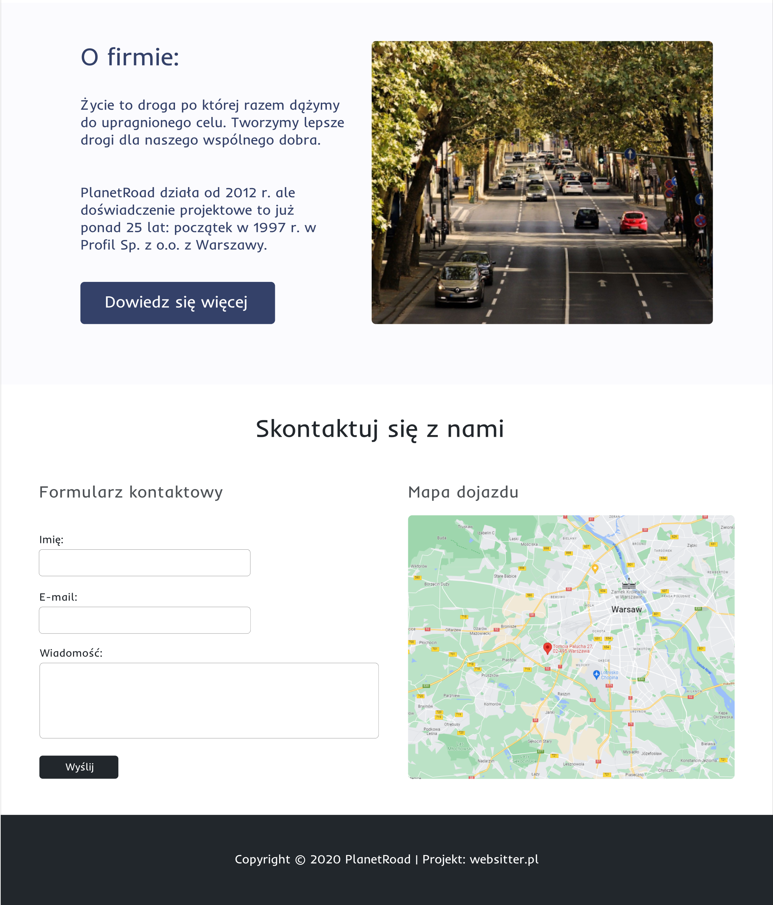
Jak widać na wyżej załączonym obrazku strona przekazywała podstawowe informacje o firmie, jednak nie dawała potencjalnemu przyszłemu kontrahentowi zbyt wielu szczegółów i nie przekonywała do podjęcia współpracy.
Aby to zmienić zacząłem zmieniać firmową stronę od podstaw, aby stała się ona prawdziwą wizytówką firmy. Na początku zastanowiłem się...
Jak zbuduję zaufanie użytkownika od pierwszego kontaktu? — Rozszerzenie struktury strony
Na wczesnym etapie rozwoju strony stwierdziłem, że: Hero nie informuje użytkownika bezpośrednio czym się zajmujemy - dla użytkownika, który trafi na naszą stronę poprzez organiczne wyszukiwanie może być to mylącę. Ponad to strona główna nie daje wystarczająco dużo przestrzeni na budowanie zaufania i opowiedzenie historii firmy. W rozmowach z CEO oraz podczas audytu konkurencji wyraźnie widać było, że firmy z branży drogowej, które skutecznie pozyskują klientów B2B, eksponują ludzi stojących za marką oraz twarde liczby potwierdzające skalę działalności.
Aby rozwiązać te problemy, w pierwszej iteracji stworzyłem sekcję Hero od zera, a także rozszerzyłem stronę główną o dwie nowe sekcje: prezentację zespołu (przygotowanie i obróbka zdjęć) oraz doświadczenie firmy w liczbach (podliczenie statystyk firmowych). Równolegle wydzieliłem także, dwie nowe podstrony „Kontakt”, który wcześniej był jedynie linkiem i „Doświadczenie”, przenosząc formularz kontaktowy ze strony głównej oraz dodając pierwsze referencje z wcześniejszych projektów.
Ten etap był również momentem edukacyjnym dla klienta — uświadomiłem, jak kluczowe jest systematyczne zbieranie referencji po zakończonych realizacjach, które wcześniej schodziły na dalszy plan w natłoku bieżących obowiązków. W pryszłości stają się one jednak wizytówką i świadectwem aktywności firmy.
Efektem tych zmian było lepsze rozłożenie treści, wyraźniejsza hierarchia informacji i mocniejsze pierwsze wrażenie, co bezpośrednio wspierało cele wizerunkowe i sprzedażowe strony.
{kind=link}
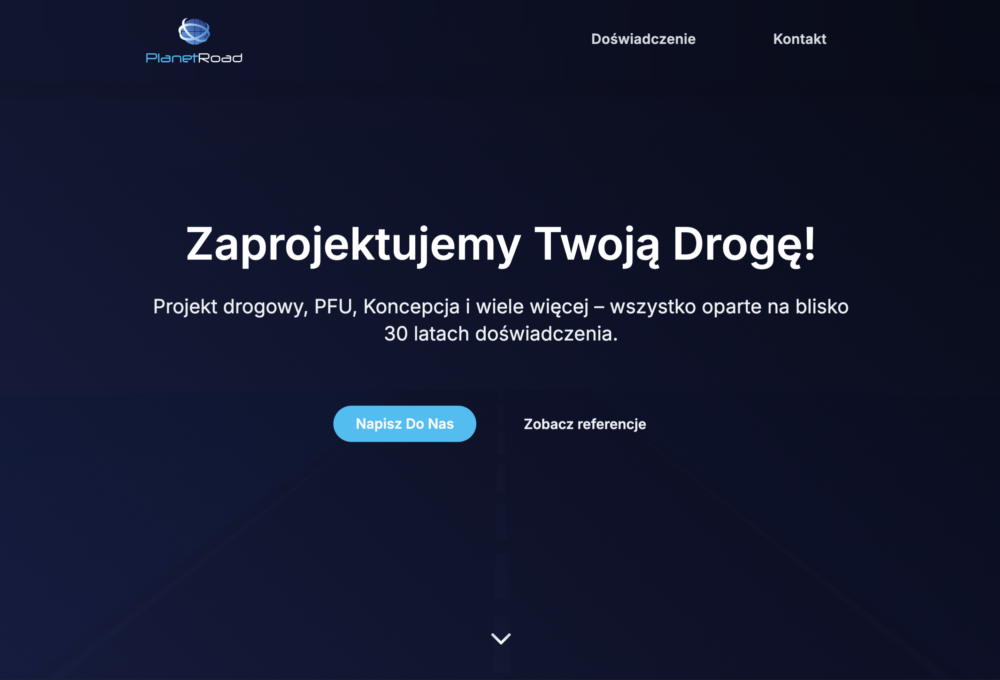
{kind=link}
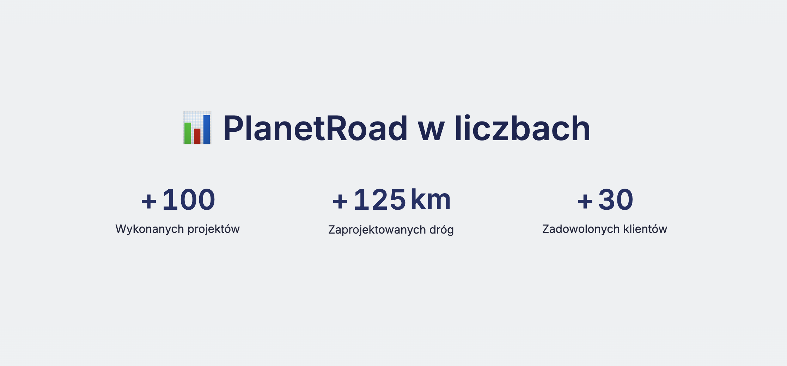
{kind=link}
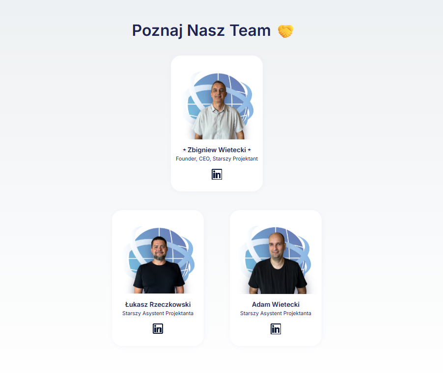
{kind=link}
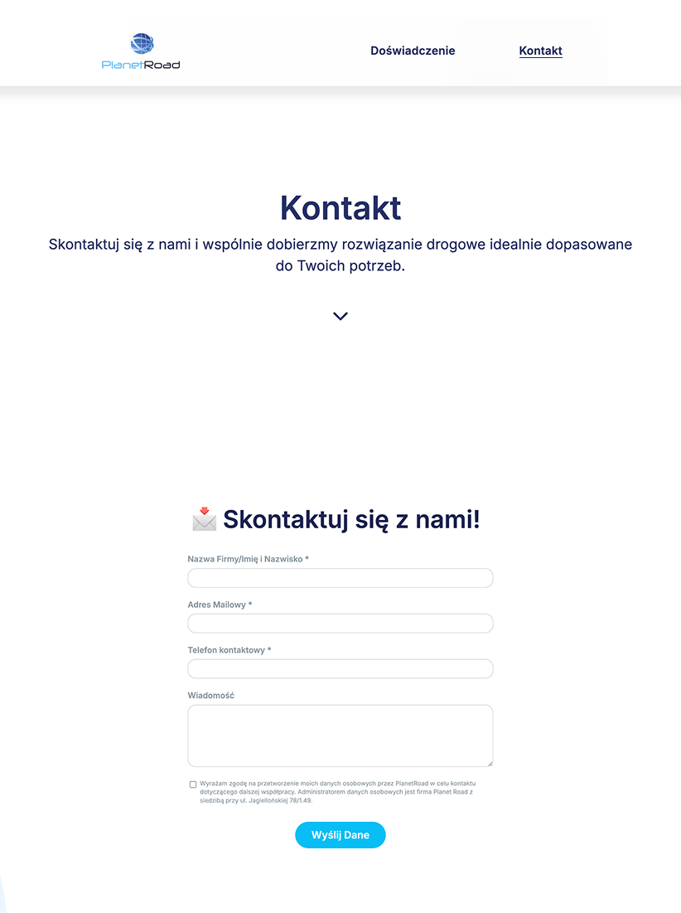
{kind=link}
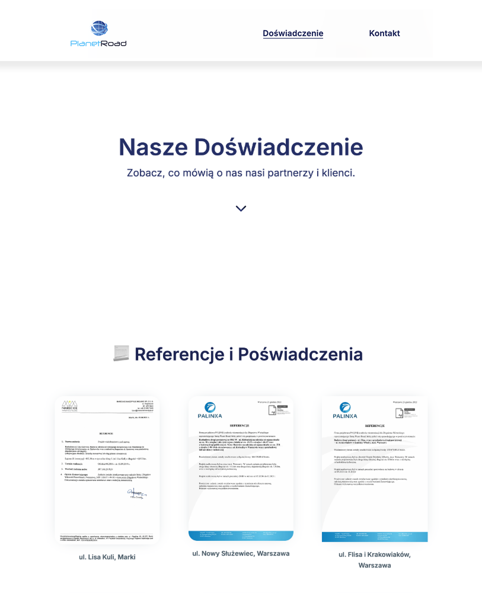
Dlaczego szybkość strony ma znaczenie w B2B? — Optymalizacja wydajności i SEO
Według najnowszych badań ponad 50% użytkowników opuści stronę gdy ładuje się ona dłużej niż 3 sekundy! Mając tą świadomość i wiedząc, że mogłoby to zniwelować wszelkie korzyści wynikające z posiadania strony dla firmy, po dodaniu dużej ilości nowej treści na stronę zdecydowałem się przetestować i w razie potrzeby poprawić performance strony.
Okazało się, że po rozbudowie struktury strony zauważalnym problemem stała się spadająca wydajność strony, szczególnie na urządzeniach mobilnych. Analiza w Google PageSpeed Insights oraz Lighthouse wykazała, że ciężkie grafiki znacząco wydłużają czas ładowania, co negatywnie wpływa zarówno na doświadczenie użytkownika, jak i pozycjonowanie.
W ramach tej iteracji przeprowadziłem gruntowną optymalizację techniczną: konwersję zdjęć do formatu WebP, poprawę struktury HTML, optymalizację ładowania zasobów oraz korekty SEO na stronie aby zadbać o pozycjonowanie w google.
Po wdrożeniu zmian czas ładowania strony uległ wyraźnej poprawie, a strona zaczęła spełniać zalecenia Core Web Vitals, co stworzyło solidne fundamenty pod dalszy rozwój i wysoką widoczność w wyszukiwarce. Ze względu na brak dostępu do archiwalnych raportów Lighthouse, efekty zostały oszacowane na podstawie realnych danych m.in. redukcji wagi zasobów oraz znajomości dobrych praktyk wydajnościowych.
{kind=link}
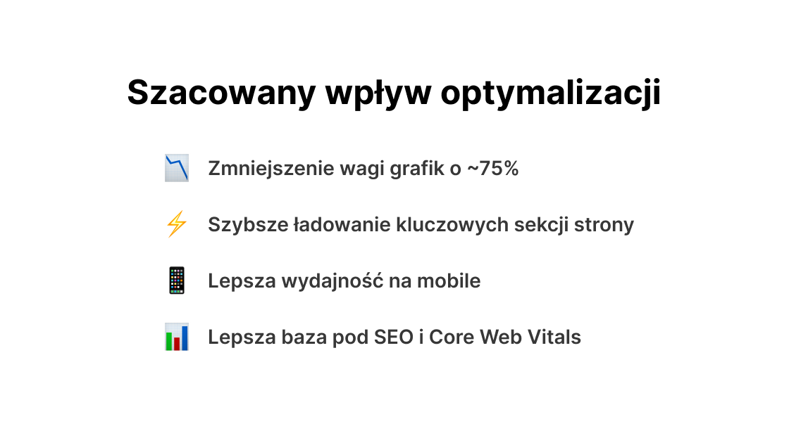
Jak połączyć potrzeby użytkownika z celami biznesowymi? — Priorytetyzacja oferty
W kolejnej iteracji wspólnie z CEO zidentyfikowaliśmy, że obenca oferta firmy jest mało konkretna i niejednoznaczna z perspektywy biznesowej. Podczas warsztatów i rozmów strategicznych okazało się także, że nie wszystkie usługi mają taką samą rentowność i znaczenie dla rozwoju firmy.
W odpowiedzi na ten problem sporządziliśmy kompletną listę wszystkich realizowanych usług, które następnie zostały opisane, wycenione, oszacowane czasowo oraz priorytetyzowane pod kątem opłacalności biznesowej. Kolejnym krokiem było stworzenie dedykowanej podstrony dla realizacji, tak aby klienci mogli zorientować się we własnym zakresie w naszej ofercie jeszcze przed pierwszym kontaktem z firmą.
Efektem była klarowna, uporządkowana oferta, która wspiera zarówno proces sprzedaży, jak i dalsze decyzje strategiczne.
{kind=link}
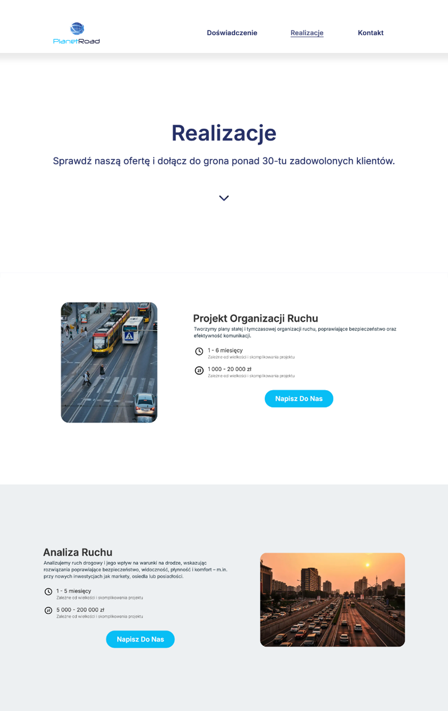
Jak pomagam użytkownikowi szybko znaleźć właściwą usługę? — Uproszczenie prezentacji realizacji
Analizując zachowania użytkowników i przeprowadzając szybkie testy użyteczności, zauważyłem, że tematyczne grupowanie realizacji na stronie głównej było mało czytelne dla nowych użytkowników. Osoby odwiedzające stronę chciały przede wszystkim szybko sprawdzić, czy firma wykonuje konkretną usługę.
Dlatego zdecydowałem się zmniejszyć szczegółowość informacji na stronie głównej, eksponując konkretne nazwy usług, a bardziej rozbudowane opisy przenosząc na dedykowane podstrony realizacji.
Podczas wielokrotnego przeglądania strony oraz prostych testów użyteczności doszedłem do wniosku, że warstwa wizualna nie zawsze wspierała zrozumienie prezentowanych usług. Część zdjęć była odbierana jako zbyt ogólna lub niejednoznaczna, co utrudniało szybkie powiązanie obrazu z konkretną realizacją.
Przy ograniczonym budżecie zdecydowałem się na rozwiązanie pragmatyczne — samodzielnie przygotowałem scenografię i wykonałem zdjęcia, które w czytelny sposób pokazywały charakter i zakres realizowanych usług.
Dzięki temu prezentacja oferty stała się spójniejsza, a użytkownicy mogli szybciej zrozumieć, czym firma faktycznie się zajmuje — bez konieczności wczytywania się w szczegółowe opisy.
Po tej zmianie nawigacja stała się prostsza i bardziej intuicyjna, a użytkownicy szybciej mogą odnaleźć interesujące ich obszary oferty.
{kind=link}
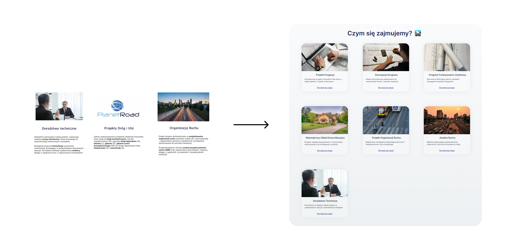
{kind=link}
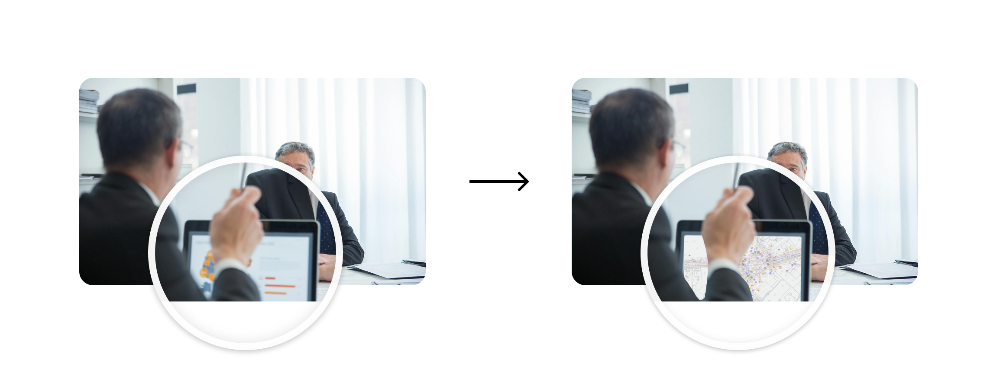
{kind=link}
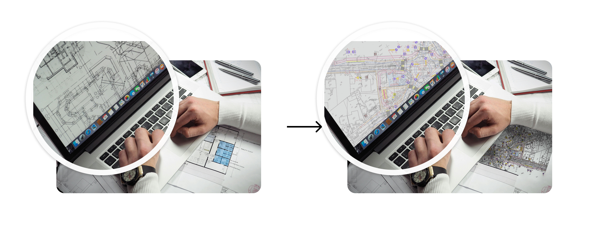
{kind=link}
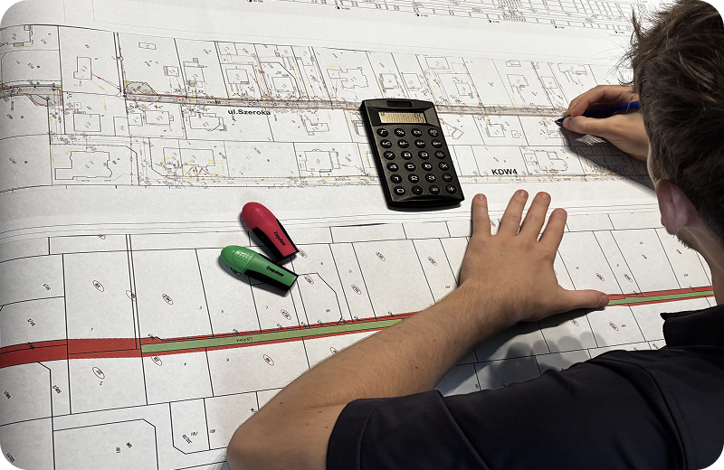
{kind=link}
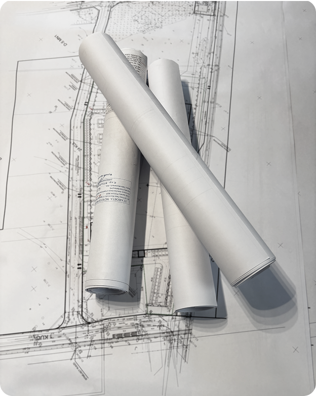
Jak skracam czas decyzji w procesie przetargowym? — Sortowanie i grupowanie referencji
W trakcie rozwoju strony firma ukończyła kilka projektów, a liczba referencji znacząco wzrosła. Wpłynęło to na wydłużenie czasu wyszukiwania konkretnej referencji
Podczas rozmowy z CEO poprosiłem go o znalezienie najdłuższej referencji z zakresu PFU. Zadanie zajęło mu około 3 minuty, mimo znajomości struktury strony.
Ta informacja jasno pokazała, że obecny sposób prezentacji referencji nie wspiera realnych potrzeb biznesowych. W odpowiedzi na ten problem pogrupowałem referencje według rodzaju realizowanej usługi, gdyż potencjalny klient firmy szuka wykonawcy z doświadczeniem w konkretnym typie projektu np. Program Funkcjonalno-Użytkowy o określonych w wymaganiach parametrach.
Efektem było znaczące skrócenie czasu wyszukiwania konkretnych referencji i wsparcie realnego procesu przetargowego.
{kind=link}
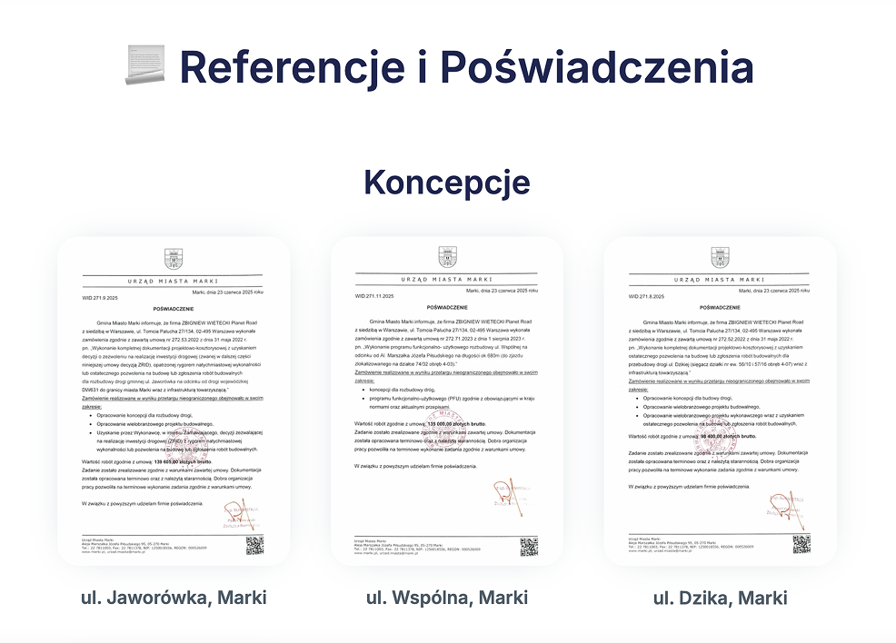
Jak wzmacniam poczucie bezpieczeństwa użytkownika? — Transparentność i RODO
Wraz z rozwojem strony pojawiła się potrzeba lepszego zadbania o transparentność przetwarzania danych osobowych, zarówno z perspektywy formalnej, jak i wizerunkowej.
Stworzyłem dedykowaną stronę polityki prywatności, jasno komunikującą sposób przetwarzania danych klientów. Teraz każdy zainteresowany może z poziomu dolnej nawigacji dostać się na tę podstronę i rozwiać swoje ewentualne wątpliwości.
Efektem była większa wiarygodność firmy i poczucie bezpieczeństwa po stronie użytkowników.
{kind=link}
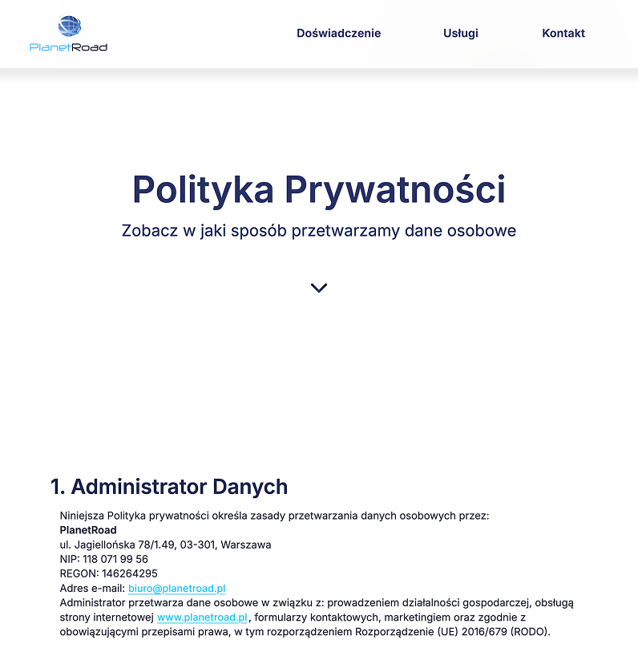
Jak pokazuję realną wartość pracy zespołu? — Wizualna prezentacja efektów realizacji
Rewolucja Social Mediów ostatnich lat jasno pokazała, że wizualne przedstawienie efektów pracy mają ogromny wpływ na postrzeganą wartość usług, a krótkie filmiki to klucz do zdobycia uwagi odbiorcy.
W odpowiedzi na powyższy wynik analizy wzbogaciłem podstrony "Doświadczenia" oraz "Realizacje" o materiał wideo, pokazując proces - zdjęcia projektu oraz zdjęcia „przed i po”.
Dzięki temu potencjalni klienci mogą lepiej zrozumieć zakres pracy firmy i zobaczyć finalny efekt inwestycji.
{kind=link}
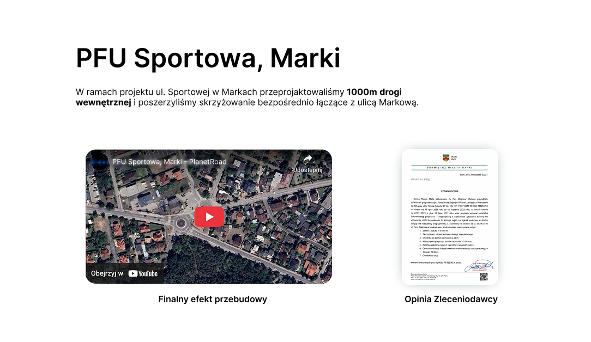
Efekt Końcowy
✅ Zwiększyłem widoczność firmy w internecie i wygenerowałem zapytania od potencjalnych klientów dzięki przejrzystej prezentacji oferty i portfolio.
✅ Wyróżniłem firmę na tle konkurencji poprzez klarowne przedstawienie usług i dotychczasowych realizacji wymaganych w przetargach.
✅ Zapewniłem spójność strony z nową identyfikacją wizualną, wzmacniając profesjonalny wizerunek marki B2B.
✅ Poprawiłem doświadczenie użytkownika i szanse na konwersję dzięki intuicyjnej nawigacji i łatwemu kontaktowi.
{kind=link}
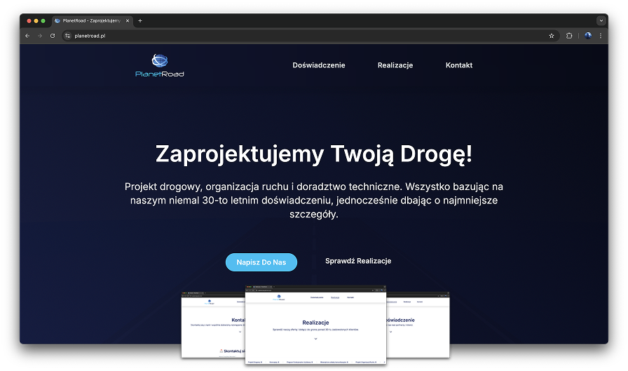
Stronę w pełnym wymiarze można zobaczyć pod linkiem www.planetroad.pl.
Po Projekcie
Kluczowe Wnioski
🧠 W projektach B2B kluczowe znaczenie ma jasna struktura informacji i szybkie budowanie zaufania — użytkownicy nie eksplorują strony, lecz skanują ją w poszukiwaniu potwierdzenia kompetencji i wiarygodności firmy.
🧠 Wydajność techniczna strony oraz dostępność (WCAG) nie są jedynie dodatkiem — w przypadku klientów z sektora publicznego i dużych inwestorów stają się realnym kryterium oceny profesjonalizmu firmy. Natomiast jeżeli chodzi o rankingi przetargowe, to wydajność i dostępność może się nawet przełożyć na podpisanie dużego kontraktu lub jego niepodpisanie, gdy zleceniodawcy strona nie będzie się ładować wzrasta ryzyko, że ją opuści.
Następne Kroki
🔜 Rozbudowa sekcji realizacji o case studies
– każda realizacja mogłaby zostać rozwinięta o opis problemu, zakres
prac, zastosowane rozwiązania oraz efekty, co jeszcze silniej
wzmacniałoby ekspercki wizerunek marki i ułatwiało decyzje zakupowe.
🔜 Wprowadzenie dedykowanych landing pages pod konkretne
usługi
– osobne strony dla projektów drogowych, organizacji ruchu czy
konsultingu technicznego umożliwiłyby lepsze pozycjonowanie SEO i
precyzyjne dopasowanie komunikacji do różnych grup klientów.
🔜 Rozszerzenie strony o treści eksperckie
– sekcja artykułów lub aktualności branżowych (np. zmiany w
przepisach, dobre praktyki projektowe) mogłaby budować długofalową
widoczność w Google oraz pozycjonować PlanetRoad jako lidera wiedzy
w branży.
🔜 Zaawansowana analityka i optymalizacja konwersji
– dalsza analiza zachowań użytkowników (scroll depth, click maps,
A/B testy) pozwoliłaby jeszcze lepiej dopasować układ strony i
zwiększyć liczbę zapytań ofertowych bez konieczności zwiększania
ruchu.